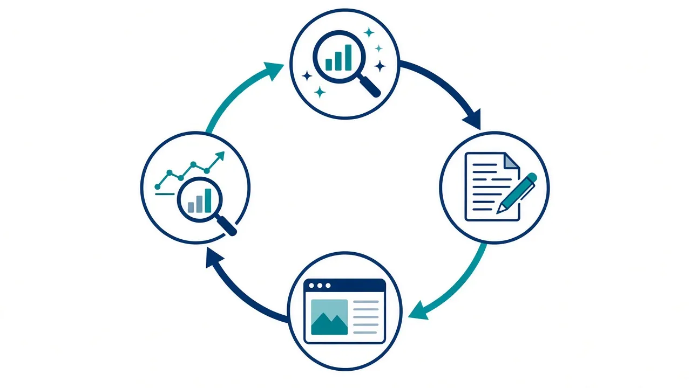

SEO for B2B companies in India works when you publish, every week, clear answers to the exact questions your buyers search before they shortlist a vendor, link those answers to your service pages, and track which ones bring enquiries. Most Indian B2B sites skip this because nobody has time to do it daily. An AI SEO agent does that daily work for you: it researches, writes, publishes and tracks one post a day.
Look at a typical Indian manufacturer, distributor, SaaS firm or services company. The website has a home page, an about page, a product list and a contact form. It was built once, then left alone. When someone searches for brand name, it shows up. When a purchase head in Pune or a founder in Dubai searches for the problem the company solves, it does not.
Buyers type short, blunt queries, such as "seo for b2b companies india" or "erp software for distributors", and they click whoever answers best. The reasons most sites miss those clicks are almost always the same:
Google's own SEO starter guide says the same thing in plain words: make content that is helpful, reliable and written for people, and help Google find it. None of that is hard. It just has to happen every day.
B2B search is different from consumer search. Volumes are smaller, buyers are fewer, and each deal is worth much more. A single post that ranks for a narrow query such as "inventory dashboard for multi-branch distributors" can bring one enquiry a month, and that one enquiry may be worth more than a thousand casual visitors. That changes the plan:
Our AI SEO Agent runs this loop every day on your website. You agree the topics, facts and tone with us once. After that the agent works on a schedule, and you can review any post whenever you like.

SEO is a long game. In the first month you build the foundation: indexed pages, a first cluster and early impressions. Leads build over three months or more. We tested the agent on our own website, claraai.tech, before offering it to anyone else.
The full breakdown, with real screenshots, is in our AI SEO agent case study.
| AI SEO agent | SEO agency | In-house writer | |
|---|---|---|---|
| Publishing pace | Daily, on a schedule | A few posts a month | Depends on one person's workload |
| Knows your business | Works from your approved facts sheet | Varies by account manager | Yes, over time |
| Indexing and tracking | Built into the daily run | Usually a monthly report | Often skipped |
| Your time needed | One setup, then optional reviews | Regular calls and approvals | Hiring, briefing, managing |
An agency still makes sense for large link-building or brand campaigns. A writer makes sense if you need deep technical white papers. For the steady, daily work of answering buyer questions and keeping the site growing, an agent is the most consistent option. If you also want outbound, our AI SEO agent for B2B companies guide and AI agents for B2B sales teams explain how SEO fits with the rest of the pipeline.
Start small and concrete. List your three most important services and check that each has its own page. Write down the ten questions buyers ask your sales team before they buy. Connect Google Search Console so you can see what Google already shows you for. Then publish answers to those questions, one by one, and link each to the right service page.
If you would rather not run that yourself, Clara AI builds and runs the agent for you. We are a 14-person team that builds AI agents for 19 businesses, including Hiranandani and Vijay Sales. Book a free demo and we will show you the agent working on a site like yours.